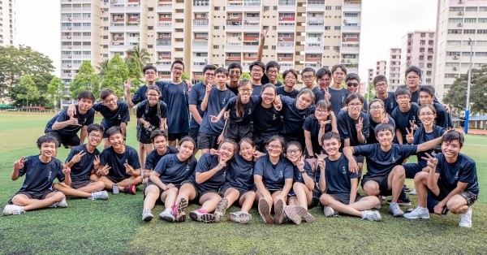
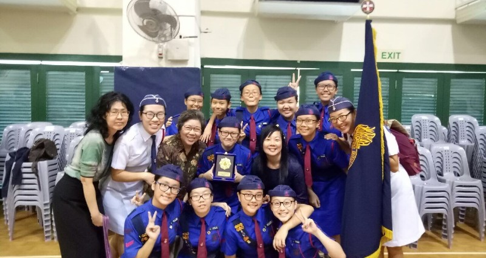

Secondary School:
I was from Zhonghua Secondary School, studying in Normal Academic(NA) stream as my PSLE score only allows me to only go for NA stream thus I have choosen to go to Zhonghua. Zhonghua have more subjects offered for NA students but we have to take three O-Level subjects as it is complusory, which I have Design & Technology(DNT), Chinese and E-Math.

Class
Zhonghua have given us various activities and programs for our post-exams activities, one of our activities was joining various electives module that was given to us in Sec 3 as to experience the different types of jobs role out there, which I had joined one that teaches what a Stewardess does and we had a showcase on what we have learn dressed as a Air Stewardess too!

CCA
My CCA in secondary school was Girls’ Brigade(GB), 48th Company. Every two years there is a Drill Competition between schools, which only Top 3 of the schools are given Gold Award, which my cca mates and I have helped our school and company to achieve it. I had also attended GB camps that allows me to interact with students from other schools, it was amazing meeting them!
Higher NITEC:
I was unable to qualified for Poly Foundation Program(PFP), thus I have decided to go to ITE, Higher NITEC first via Direct Poly Program(DPP) to learn hand-on skills instead of going back to Sec 5 to take O-Level before going to Poly. I was in ITE College West, studying Higher NITEC in Mechatronics Engineering. DPP is like PFP, we also have foundation period before starting Year 1, however unlike PFP, DPP foundation period is only for three months instead of a year. Also, I had went undergo a Internship during my second year, I was attactched to a Manufacturing Company, SPEQS Manufacturing pte ltd which is located 10min away from Joo Koon MRT! I have learned what does a Quality Assurance(QA) does everyday and have helped my supervisors and manager in many tasks, such as writing a task report.
Achievements:
| Years | Awards | Level | Remarks |
|---|---|---|---|
| 2016 | Edusave Merit Bursary | Achieving good academic performance and demonstrating good conduct at Sec 2 | |
| Edusave Certificate of Achievement | |||
| Gold award in National Drill Competition for Girls’ Brigade | Secondary 2 | Among top 3 schools to acheieve Gold Award | |
| 2019 | Higher NITEC Bridging Math pass with Merit | Year 1 | GPA Advantage Point of 0.1 |
| 2020 | Director List for meritorious academic performance | Year 2 | Top 10% in course at ITE College West for Apr to Sep 2020 |
| Edusave Good Progress Award | Improvement in academic performance and demonstrating good conduct | ||